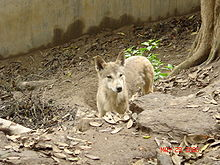
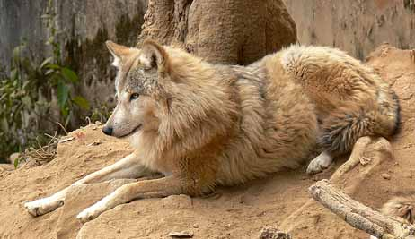

Descripción
El lobo himalayo es una subespecie del lobo gris. Esta especie es bastante nueva. Gracias a las pruebas genéticas que hoy en día se conocen, se arribó a que este lobo es diferente al lobo de la india, pero guarda una estrecha relación con el. Estos lobos son color café y gris, y poseen colores blancos y negros en las zonas de la cara y a lo largo del pecho.
Distribucción
Esta especie de lobos se encuentra en algunas áreas específicas de la India, por ejemplo en Jammu, en Cachemira, en Nepal y en el Himalaya. También se han identificado en China y en Mongolia. Antes se creía que solo vivían en la cordillera del Himalaya, pero esto fue hasta cuando unos grupos se hallaron en otras regiones.
Conducta
Las manadas de lobos himalayos poseen de 6 a 8 miembros. Los lugares en donde viven estos animales son grandes y tienen kilómetros de largo. Estos animales no parecen ser tan agresivos cuando protegen sus territorios.
De hecho, existen muchas manadas de lobos himalayos superpuestas con lobos indios, sin embargo no se molestan demasiado los unos a los otros, lo que no quiere decir que no sucedan enfrentamientos donde se sienten aullidos y gruñidos, generalmente cuando se encuentran. Son raras las veces que estas especies se enfrentan físicamente.
Dieta/Alimentación
La dieta para estos lobos es de medianos y pequeños animales. Entre los animales que consumen podemos enumerar a los roedores y conejos, estos conforman la mayor parte de su alimentación. En ocasiones los lobos himalayos se alimentan de grandes animales, pero esto ocurre cuando cazan en grupos. Estos lobos son diestros cazadores, pero a veces pasan trabajo para encontrar comida.
Reproducción
Los lobos himalayos se consideran adultos cuando tienen alrededor de dos años de edad. Cuando tienen 1 año y medio muchos abandonan la manada pues necesitan ser capaces de establecer un territorio y encontrar una pareja antes de la temporada de cría. Las hembras tienen de cuatro a seis cachorros, y van a cuidar muy bien de ellos hasta que sean lo suficiente grandes para unirse al resto de la manada.
Debido al hecho de que los lobos himalayos viven tan cerca de los lobos indios, muchos expertos pensaron que en algún momento podrían cruzarse, sin embargo, hasta la fecha no existe evidencias de que esto realmente haya ocurrido, quizás en el futuro se puedan ver evidencias de este tipo.
Conservación
Hoy en día existen menos de 350 lobos himalayos en su hábitat natural, también existen 21 de ellos en los zoológicos de la India. Resulta duro aumentar esta población porque es muy baja y para aumentarla se necesita de mucho tiempo, sin embargo, muchas personas les tienen pasión a estos lobos y no están dispuestos a renunciar a ellos, por lo que continuarán haciendo todo lo posible para que posean un lugar donde vivir y tengan acceso a los alimentos para desarrollarse.
Esta es una tarea difícil y se necesita de un gran apoyo para tener éxito. Parte del éxito de ayudarles a sobrevivir consiste en programas de mejoramiento que se realizan en la india con los lobos himalayos que están en cautiverio. Los cachorros son criados para ayudar a aumentar las crías, y el objetivo es que algún día se puedan liberar a su hábitat natural.